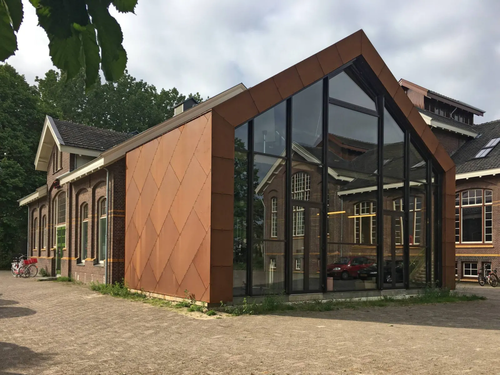

PrimeConnect
Over ons.
We helpen anderen graag om nieuwe dingen te creëren, maar ontwikkelen ook onze eigen producten.
Bij PrimeConnect brengen zeven engineers met achtergronden in natuurkunde, elektrotechniek, werktuigbouwkunde, mechatronica en industrieel ontwerp hun kennis samen.
Elk teamlid brengt een eigen vakgebied mee. Samen vormen we een brede basis waarmee we elk vraagstuk van meerdere kanten kunnen benaderen.
- 01Natuurkunde
- 02Elektrotechniek
- 03Werktuigbouwkunde
- 04Mechatronica
- 05Industrieel ontwerp

Autonomie
Begrijp wat je gebruikt
Autonomie vormt de kern van hoe wij werken. Door onze software en techniek zelf te ontwikkelen en bewust gebruik te maken van open-source software, behouden we controle en begrip over onze producten.
Het verhaal over het Paard van Troje waarschuwt al eeuwen voor de gevaren van iets in gebruik nemen dat je niet volledig doorgrondt.
Lees meer over onze filosofie
Waar we zitten
De Gasfabriek, Deventer
Ons kantoor en lab zitten in de Gasfabriek aan de Zutphenseweg. Hier ontwerpen, bouwen en testen we.
Neem contact op